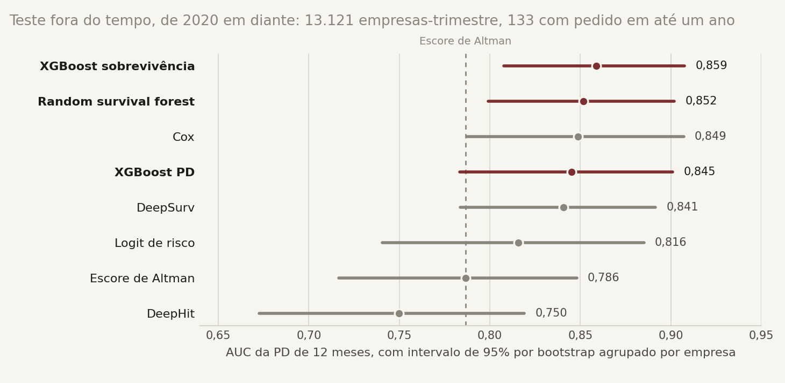

Alerta Antecipado de Risco de Crédito Corporativo
Análise de sobrevivência · XGBoost · DeepSurv · DeepHit · Sinais lidos por modelos de linguagem · Agentes com trava numérica · Revisão sistemática · Python · 222 testes
A pergunta de negócio
Quando uma grande empresa pede recuperação judicial, a perda cai sobre bancos, debenturistas, fundos de crédito e os fornecedores que venderam a prazo. A Oi pediu duas vezes, em 2016 e em 2023. A Americanas pediu em janeiro de 2023, dias depois de divulgar uma inconsistência contábil. A Light veio em maio de 2023. Depois de cada caso, o comitê de crédito faz a mesma pergunta: havia algo no registro público, um ano antes, que devia ter mudado a decisão?
Desde janeiro de 2025 a pergunta tem também forma regulatória. A Resolução CMN 4.966 pede aos credores brasileiros provisão pela perda esperada: os próximos 12 meses para exposições sem problema, o prazo inteiro quando o risco de crédito aumenta de forma significativa. Isso exige uma probabilidade de default para cada horizonte, não um escore único, e exige perceber o aumento cedo.
Os dados
Tudo é público. As demonstrações trimestrais e anuais de todas as companhias abertas vêm do portal de dados abertos da CVM, cada uma datada pelo dia em que chegou ao regulador, então o modelo só vê o que um analista poderia ter visto na época. O parecer do auditor é lido em busca do parágrafo de continuidade operacional. Os fatos relevantes, que a empresa é obrigada a publicar quando algo importante acontece, trazem a notícia cedo: uma renegociação de dívida, um waiver de covenant, uma venda de ativo para fazer caixa, um diretor financeiro que sai. Juros, inflação, atividade, desemprego e inadimplência das empresas vêm do Banco Central.
A parte difícil é o desfecho. Nenhuma tabela pública diz quando cada companhia aberta entrou em recuperação judicial ou extrajudicial; o cadastro mostra só a situação atual. A base de eventos foi reconstruída a partir de três rastros públicos (o cadastro, os documentos das empresas em recuperação e os fatos relevantes que anunciam o pedido), com um modelo de linguagem separando o pedido da própria empresa do pedido de um cliente ou de uma controlada, e depois conferida por um segundo modelo, que lê os documentos de cada evento, com uma regra fixa. São 106 eventos em 89 empresas desde 2011.
O método, e por que este
Um painel, um teste, oito modelos. Cada companhia aberta não financeira entra com uma linha por trimestre, com o que se sabia no fim daquele trimestre. Empresas que saíram da bolsa sem evento ficam nos dados até sair, então a amostra não guarda só as sobreviventes. Os modelos vão do clássico ao recente: o escore de Altman na versão para emergentes, um logit de risco em tempo discreto, um modelo de Cox, XGBoost como classificador e como modelo de sobrevivência, uma random survival forest, DeepSurv e DeepHit. Todos treinam até 2018, pulam 2019 e são testados de 2020 em diante, um período que nenhum deles viu.
Modelos de sobrevivência, porque a regulação pede curvas. Um modelo de sobrevivência dá a probabilidade de default em 12, 24 e 36 meses para cada empresa e trimestre, que é o que a perda esperada pelo prazo inteiro precisa. Se essas probabilidades estão calibradas, e não só se ordenam bem as empresas, é testado à parte.
Modelos de linguagem leem os documentos, e são testados como qualquer outra variável. Um modelo lê o assunto de cerca de 31 mil fatos relevantes e marca onze tipos de estresse, com o nome, o nome comercial e o CNPJ da empresa escondidos, para que ele não lembre como a história terminou. Um segundo modelo lê uma amostra para medir a concordância, e 200 documentos foram lidos inteiros para ver o que o assunto sozinho perde. O teste que diz se esses sinais acrescentam algo foi escrito e registrado antes de o período de teste ser aberto.
Um parecer de crédito que não inventa número. Agentes montam um parecer para o comitê de crédito: um lê os documentos recentes, outro escreve. Um conferente que não é modelo de linguagem compara cada número e cada data do rascunho com os valores que as ferramentas devolveram, e bloqueia o parecer se algum não tiver fonte.
Resultado
Corrigido em 23 de novembro de 2026. Uma revisão independente do código, feita depois que a primeira versão foi ao ar, achou erros que mudaram resultados publicados. A regra que lê o parágrafo de continuidade operacional no parecer do auditor também pegava uma frase-padrão que todo parecer traz desde 2016, e o primeiro parecer sobre a Casas Bahia citou por engano um parágrafo desses. A conferência da calibração só guardava janelas ainda não encerradas quando terminavam em pedido, o que inflou as taxas observadas. O código foi corrigido, cada correção com um teste, e o teste inteiro rodou de novo; as hipóteses e o teste registrado não mudaram. O artigo abre com uma errata que lista cada correção e as conclusões que mudaram.
Versão 2, 24 de novembro de 2026. Uma segunda rodada corrigiu limites que a versão corrigida declarava. A máscara dos nomes das empresas cortava outras palavras (o nome Oi dentro de “apoio”) e deixava passar nomes comerciais como GPA; agora os nomes são escondidos como palavras inteiras, nomes comerciais incluídos. Os 1.055 assuntos afetados foram lidos de novo e todo resultado que usa os sinais rodou outra vez: nenhuma conclusão mudou. A versão também traz o que o plano prometia e a primeira rodada deixou de fora: uma tabela do que move o risco e um teste da troca de auditor.

Fora do tempo, de 2020 em diante, os modelos de árvores ordenam melhor as empresas: o XGBoost de sobrevivência e uma random survival forest chegam a uma AUC de cerca de 0,85 na PD de 12 meses, contra 0,79 do escore de Altman e 0,82 do logit de risco. Eles superam o Altman mesmo quando as empresas são reamostradas inteiras; a vantagem sobre o logit de risco, um ponto de comparação bem especificado, não é significativa nesse teste. No nível do risco, em 36 meses a taxa observada é de 2,9% e a maioria dos modelos a superestima; o XGBoost de sobrevivência é o que chega mais perto. As curvas precisam ser recalibradas com a inadimplência da própria carteira antes de virar provisão.
Os sinais lidos pelos modelos de linguagem não melhoraram o teste registrado: AUC de 0,798 com eles e de 0,816 sem eles. O tratamento dos valores extremos tinha apagado os cinco tipos de sinal mais raros; uma rodada com eles mantidos, decidida depois da abertura do teste, chega a 0,819, também sem ganho. Lidos só no assunto dos documentos, esses sinais não acrescentam aos balanços.
O que move o risco está sobretudo nos balanços. No XGBoost, cobertura de juros, capital de giro sobre ativos e prejuízos recentes pesam mais; no modelo de Cox, prejuízos, parágrafo de continuidade operacional, patrimônio negativo e atraso na entrega aumentam o risco, e capital de giro e caixa o reduzem. A troca de auditor no último ano, testada depois da abertura do teste e por isso só como exploração, não acrescentou nada significativo a nenhum modelo.
Pareceres de quatro casos passados, escritos com o que se sabia um ano antes de cada pedido, mostram o alcance e o limite. A Casas Bahia aparecia com PD de 12 meses de 3,3%, cerca de três vezes a média. A Americanas, cujo problema estava dentro dos próprios balanços, aparecia abaixo da média.
O que a literatura fez e não fez
Uma revisão sistemática pelo protocolo PRISMA 2020 triou 4.019 estudos e incluiu 1.642. Modelos de sobrevivência aparecem em 96 deles, e só um estudo combina modelos de sobrevivência com modelos de linguagem. Dos 59 estudos com dados brasileiros, um usa modelo de sobrevivência e nenhum usa deep learning ou modelo de linguagem. A maioria dos resumos não diz como os modelos foram validados, e ler 60 estudos inteiros não muda muito o quadro: 32 deles continuam sem dizer como montaram a amostra de teste, e só 10 conferem se as probabilidades estão calibradas, que é do que a provisão depende. O artigo traz o protocolo, as contagens e as lacunas.
Aplicado à sua carteira
Este é o pacote de Previsão sob Medida aplicado a default, com a trava do Assistente de IA Confiável por cima. Para um banco, um fundo de crédito, uma seguradora de garantia ou um fornecedor com muito a receber, ele vira um monitor das empresas da carteira: os documentos lidos todo dia, uma curva de PD por empresa todo mês, um alerta quando aparece um sinal de estresse e um parecer para o comitê de crédito em que cada número leva à sua fonte. Roda no seu ambiente, e a decisão fica com a sua equipe.
Em público, o case só cita empresas que já passaram por recuperação. Os modelos dão nota a todas as companhias abertas, mas essas notas ficam privadas.
Artigo e código
Ler o artigo (PDF, em inglês) github.com/rhozon/corporate-credit-early-warning
Com Python 3.11 ou mais recente:
pip install -e ".[models,dev]"
pytest -v
python -m distress.cli events # base de eventos a partir da CVM
python -m distress.cli panel # painel datado pelo que se sabia
python -m distress.cli test # o teste fora do tempoToda resposta dos modelos de linguagem fica em cache no repositório, então os rótulos se reproduzem sem chave de API. A suíte tem 222 testes, entre eles um que derruba o build se algo publicado citar uma empresa sem evento ao lado de uma probabilidade ou de uma nota. O CI roda os testes a cada push. O README em inglês lista as decisões de projeto e os limites.